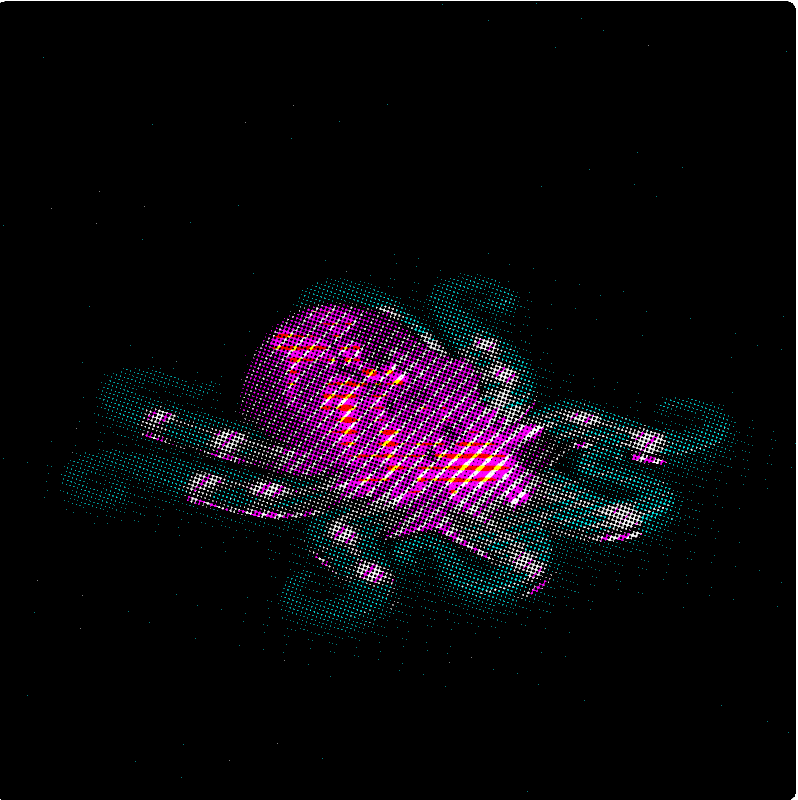
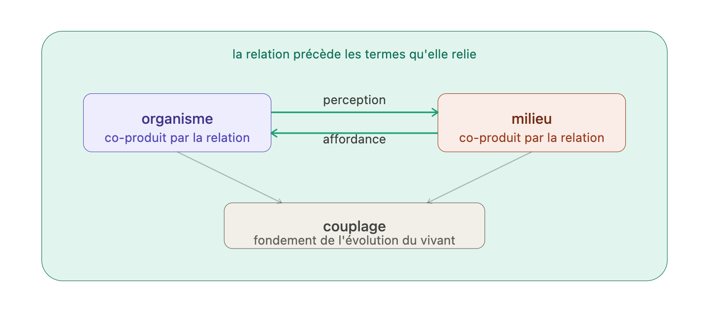

L’attention comme accordage

Dès que vous pensez à ce que vous voulez accomplir, vous cessez de prêter attention à ce par quoi vous l’accomplissez. F.M. Alexander
Ce chapitre reprend le fil, là où le premier l’avait laissé, suspendu à une image. Un corps dans un ruisseau, porté, déplacé, presque immobile. Min Tanaka y dansait sous le mouvement visible. Ou plutôt : quelque chose se dansait là, dans une zone d’indiscernabilité. Le premier chapitre nous avait suspendus à cette question : qui bouge ?
Cette suspension n’est pas fortuite. Elle touche à l’un des partages les plus puissants de la modernité : celui qui oppose l’activité à la passivité, l’initiative à la réception, le sujet qui agit au monde sur lequel il agit. Nous avons appris à nous recevoir comme les auteurs de nos gestes, les centres de décision de nos mouvements, les responsables de ce que notre corps accomplit. Cette figure du sujet souverain ne relève pas seulement de la philosophie ou du droit, elle informe silencieusement nos façons de sentir, de nous tenir, de toucher et d’apprendre.
Si le geste est, comme nous le proposons, transitif, s’il est le fait d’une relation première qui donne naissance à ses éléments constitutifs, alors une question s’impose d’elle-même : qui, ou quoi, l’accueille ?
Notre hypothèse tient en un mot : l’attention.
Une attention qui, telle que nous allons tenter de l’approcher ici, ne se définit pas comme une propriété cérébrale, d’un sujet-îlot, mais comme une dynamique relationnelle qui fait advenir le monde qu’elle traverse. Une dynamique d’accordage par laquelle un corps, un monde, parfois un autre, deviennent mutuellement sensibles. L’attention ne vient pas après coup éclairer une situation déjà là ; elle participe à sa constitution. L’attention, telle que nous tentons de la cerner ici, ne sélectionne pas seulement dans un monde donné, elle laisse paraître.
Il s’agira de montrer qu’avant d’être capture ou focalisation, l’attention est peut-être d’abord une manière d’habiter : non pas occuper un espace, mais être déjà auprès du monde, formé par ce qu’on rencontre sans cesser pour autant d’y prendre part. Une manière d’être en rapport.
Les rois ne touchent pas aux portes. Ils ne connaissent pas ce bonheur : pousser devant soi avec douceur ou rudesse l’un de ces grands panneaux familiers, se retourner vers lui pour le remettre en place, tenir dans ses bras une porte.
… Le bonheur d’empoigner au ventre par son nœud de porcelaine l’un de ces hauts obstacles d’une pièce ; ce corps à corps rapide par lequel un instant la marche retenue, l’œil s’ouvre et le corps tout entier s’accommode à son nouvel appartement.
Les plaisirs de la porte, Francis Ponge (Ponge 1942)
Haptomai : le toucher en voix moyenne
Min Tanaka dans le ruisseau nous a laissés sur un seuil. Celui de l’indiscernabilité : je bouge, je suis bougé, l’eau me bouge, trois formulations pour un seul événement, indémêlable, celui d’un geste : toucher.
Ponge le sait. Tenir dans ses bras une porte, voilà un toucher qui ne va pas de soi à la porte mais ouvre un monde. Dans ce battement de porte, le corps tout entier est ouvert par le geste à son nouvel appartement. Pour le dire encore autrement, le sujet est présenté à lui-même par le geste qu’il accomplit, non pas action sur un objet inerte, mais rencontre, négociation, moment de corps à corps où le “je” est changé en touchant, présenté en lui-même à ce nouvel environnement auquel ouvre le geste de franchir. Nous voici dans l’entrebâillement d’un espace ouvert par le geste en lui-même, le corps entier accommodé à son nouvel appartement. Cela n’est pas sans rappeler l’invitation de Bergson : si notre corps est la matière à laquelle notre conscience s’applique, alors il est coextensif à notre conscience, il comprend tout ce que nous percevons, il va jusqu’aux étoiles.1
Ce que fait Ponge en s’attardant sur ces gestes familiers, c’est distendre l’arc intentionnel qui arme tout geste, au sens du ressort qu’on bande, de la tension qui précède et porte le mouvement. Il en défait la trame, ouvre ce qui était noué, déploie ce qui était contracté. Comme Min Tanaka dans le ruisseau, il déplie le temps en durée : non pas interruption, mais suspension, création d’un espace qui se fait accueil, poche, habitat. Le geste n’est plus traversée mais demeure. Une demeure singulière, d’un tout autre statut que celui de la propriété, on n’y possède rien, on n’y est pas possédé, pas même le mouvement d’invagination des anatomistes, cette intériorisation qui replie le dehors vers un centre. Celle-ci est d’une autre nature : une demeure qui n’est ni dedans ni dehors, mais dans le pli même de l’échange, là où le corps et le monde se font mutuellement lieu.
Lorsque nous pratiquons zazen, notre esprit suit toujours notre respiration. Quand nous respirons, l’air vient dans le monde intérieur. Quand nous expirons, l’air va dans le monde extérieur. Le monde intérieur est illimité, et le monde extérieur est illimité aussi […] notre gorge est comme une porte battante. […] Ce que nous appelons “je” n’est qu’une porte battante qui va et vient quand nous inspirons et quand nous expirons.
Shunryu Suzuki, Esprit zen, esprit neuf, 1970.
Car la respiration est le premier geste terrien, elle inspire par le déploiement un air qui donne immédiatement accès à l’habitat. Depuis lors, par cette tension première, ce battement, respirer porte en lui la structure de la voix moyenne. Nous n’inspirons pas : nous sommes inspirés. Nous n’expirons pas : nous sommes expirés. Le monde intérieur et le monde extérieur se font les deux faces d’un seul mouvement, dont nous sommes la porte battante et l’habité de cet échange.
Les rois, eux, ne respirent pas non plus. Peut-être faut-il entendre dans cet im-ponere quelque chose qui concerne aussi notre rapport à la respiration. Car il existe une façon, un style de sièger dans les airs. Cette respiration des rois emplit, accumule, mesure, impose à la cage thoracique sa logique de la quantité. Toujours plus d’air, et la quantité peut vite devenir oppressante. Godard propose une tout autre approche : la respiration ne relève pas du volume mais de la surface, non de l’accumulation mais de l’échange. C’est ce qu’il nomme le “devenir feuille” : ouverte à son milieu, la feuille d’un arbre n’a pas de volume. Pour Godard, l’attention aux fragrances du milieu va modifier subrepticement notre mode d’être et d’agir, elle stimule notre nerf vague, notre dilatation vers le contexte.(Godard 2021)
Cette structure du toucher, le grec ancien l’avait inscrite dans sa grammaire. Le linguiste Émile Benveniste, dans un article remarquable intitulé L’actif et le moyen dans le verbe (Benveniste 1950), a mis au jour une diathèse verbale que le français a perdue et que le grec ancien possédait : la voix moyenne. En français, on choisit entre l’actif, je touche, mouvement qui va de moi vers l’objet, et le passif, je suis touché, où je ne suis plus sujet mais objet. Mais le grec connaissait une troisième dynamique, qui ne se laisse pas réduire à ces deux-là.
Dans la voix moyenne, le sujet est à la fois agent et site de son action. Ce que je fais est aussi ce par quoi j’arrive. Benveniste donne des exemples qui méritent qu’on les laisse résonner : naître, mourir, décider, voler, épouser un mouvement. Dans chacun de ces actes, quelque chose échappe au partage actif/passif. Naître : personne d’autre que moi ne pourrait naître à ma place, et pourtant je ne décide pas de naître, le moi est au bout de la naissance, son terme, pas son point de départ. Épouser un mouvement : c’est bien moi qui saisis la vague quand je nage, et c’est bien la vague qui me porte, me fait, me déplace.
Le verbe grec pour toucher est précisément de ce genre : haptomai, avec la désinence -omai qui marque le moyen. Pas hapto, mettre en contact, geste purement transitif, mais haptomai : je touche en étant touché, je vais vers l’objet en me laissant affecter par lui. La structure grammaticale dit quelque chose que notre langue ne peut pas dire d’un seul mot : le mouvement est double dans un seul acte.
Emma Bigé, à partir de Benveniste, propose que le geste, tout geste, est de l’ordre du moyen (Bigé 2023). Ni pure action volontaire sur un monde-objet, ni pure réception passive. Le geste nous fait en même temps que nous le faisons. Ce qu’elle nomme la voie médiane.
Haptomai : Gibson retrouve cette même structure au cœur de la perception, dans ce qu’il nomme l’hapticité : la sensibilité d’un organisme au monde adjacent à son corps par l’usage de ce même corps. Non pas un sens parmi d’autres, mais un mode de couplage. L’hapticité n’est pas une modalité sensorielle parmi d’autres, c’est la structure même du couplage organisme-monde. Et Godard va plus loin : il y a des regards haptiques, des écoutes haptiques. Dans chacun de ces cas, la même structure : percevoir c’est s’exposer à ce qu’on perçoit. S’exposer au sens littéral, vulnus, la blessure, non pas comme risque à éviter mais comme condition même de la rencontre. Affronter le tiers, l’étranger, faire l’épreuve du non-même, de l’altérité en soi.(Godard, s. d.)

C’est ce que Merleau-Ponty avait nommé la chair du monde. Cette indiscernabilité que nous avions rencontrée au cœur du geste, nous la retrouvons ici tapissant la structure même de la perception. Non pas le corps comme objet anatomique, non pas la conscience comme intériorité close, mais cet entrelacs où sujet et monde s’enjambent sans se confondre, tissés dans une même étoffe. La chair n’est pas une substance, c’est une structure : celle d’un être qui perçoit en étant perçu, qui touche en étant touché, qui voit en étant visible. Haptomai, inscrit cette fois non plus dans la grammaire grecque mais dans la texture même de l’existence incarnée.
Ce que cela implique pour l’altérité, Michel Bernard l’a formulé avec précision. Au chiasme intrasensoriel de Merleau-Ponty, touchant-touché, voyant-vu, Bernard ajoute que chaque sensation porte en creux l’esquisse d’une altérité : en touchant une surface, je fais surgir simultanément l’esquisse d’une autre main imaginaire qui me touche en retour. Et au chiasme intercorporel, la rencontre avec un autre corps n’est pas fusion dans une chair commune, mais croisement de deux corporéités singulières qui s’altèrent mutuellement sans se dissoudre. On ne peut se laisser vraiment toucher que si on ne se confond pas.
Godard pousse cette intuition au-delà du toucher tactile. Il y a des regards haptiques, dit-il, des écoutes haptiques. Dans chacun de ces cas, la même structure : percevoir c’est s’exposer à ce qu’on perçoit, accepter d’être configuré par ce qu’on configure. Ce qu’il nomme la névrose des sens, c’est précisément la rupture de cette réciprocité : toucher sans être touché, voir sans se sentir vu, percevoir depuis un point fixe et protégé sans jamais s’exposer en retour. La rupture du chiasme comme pathologie perceptive. Et il y a, dit-il, un territoire à préserver dans cet échange : non pas au sens de la propriété défendue, mais au sens d’une présence pariétale ou viscérale, là où j’existe en tant que corps sensible avant d’être un agent. Un territoire qui peut s’ouvrir, se laisser habiter, sans vivre cela comme une dépossession. Se laisser visiter, au sens où l’on visite un lieu : l’hôte reste chez lui, et pourtant quelque chose de lui se transforme par le passage de l’autre.
C’est dans ce cadre que le toucher alexandrien trouve sa rigueur. Ce que la mythologie fondatrice de la Technique raconte, à travers l’anecdote rapportée par Marjory Barlow, c’est précisément le passage d’un toucher tactile, qui projette une intention sur un corps-objet, à un couplage haptique, où le praticien s’expose en touchant, où son propre territoire s’ouvre à ce qu’il rencontre, sans s’y dissoudre. Haptomai redécouvert par accident, dans un moment de capitulation féconde. Ce n’est pas une modalité raffinée réservée aux praticiens experts. C’est la structure originaire du toucher vivant, que la Technique Alexander cherche à rouvrir là où l’habitude l’a refermée.2
Gibson précise que cette sensibilité haptique s’exerce toujours dans un champ gravitaire — c’est la gravité qui oriente le couplage, qui donne à l’organisme son axe, sa verticalité, son rapport au sol. Godard radicalise cette intuition en une formule qui en dit plus qu’elle ne semble : toucher, c’est tomber. Même de quelques grammes. Pas de contact sans abandon partiel de soi vers ce qu’on touche, sans mise en jeu gravitaire, sans ce léger déséquilibre qui est la condition même de la rencontre. Le toucher haptique n’est jamais horizontal — il est toujours orienté, toujours tenu par la gravité qui traverse et organise le couplage.
L’accordage comme fondement postural
Mais cette leçon déborde le cadre de la pratique alexandrienne. Elle désigne quelque chose de plus fondamental : la voix moyenne n’est pas une modalité particulière du geste, un raffinement accessible aux seuls praticiens. C’est la structure originaire de notre rapport au monde. Nous n’avons pas appris à toucher en voix moyenne. Nous sommes nés dedans.
Godard formule ce paradoxe avec une précision qui mérite qu’on s’y arrête (Godard 2012) : les muscles qui ont pour fonction, à l’âge adulte, de gérer la gravité sont les mêmes muscles qui, chez le nourrisson, ont pour fonction de gérer la relation à l’autre. Autrement dit, le dispositif musculaire et neurologique qui nous permet de faire avec la gravité a pour premier usage non pas de nous permettre de nous tenir debout, ce que ne fait pas le nourrisson avant longtemps, mais de nous exprimer. L’appareil moteur qui nous servira debout à composer avec la gravité est d’abord entraîné par une toute autre négociation : celle de l’accordage affectif du nourrisson avec ses proches. Il y a ainsi indissociabilité entre notre façon propre de négocier avec la gravité et notre expressivité. Le fond postural qui porte nos gestes est d’abord un fond relationnel.
Ce que la clinique d’Ajuriaguerra confirme depuis un autre angle (Ajuriaguerra 1970). L’essentiel de l’activité du nourrisson est posturale, à ceci près qu’il n’y a pas encore de posture à tenir, puisque l’enfant repose en permanence, soit sur le sol, soit dans les bras des parents. C’est précisément là qu’intervient l’hypothèse du psychiatre : la fonction de ces premières réactions toniques est relationnelle. L’activité tonico-posturale est la fonction de communication essentielle pour le jeune enfant, fonction d’échange par l’intermédiaire de laquelle l’enfant donne et reçoit. Ce mode de communication s’exprime au mieux en parlant de contagion tonique : l’enfant partage avec les parents son état affectif en leur présentant des variations toniques auxquelles ceux-ci s’accordent, et non seulement réagissent. L’état d’alarme du nourrisson est partagé par les parents comme son état d’apaisement. Ce partage est ce qui est recherché par le nourrisson et en fonction duquel ses réactions seront progressivement adaptées aux situations de l’environnement. La personnalité du nourrisson se façonne en même temps qu’elle façonne et met en question l’environnement qui l’accueille. Le nourrisson n’est pas, du fait de son immobilité, un être passivement informable : c’est parce qu’il met à l’épreuve, dans la relation tonique avec le parent, les situations auxquelles il est confronté, qu’il peut se les approprier.
C’est Husserl, dans un manuscrit tardif de 1934, qui avait posé les fondements de ce rapport gravitaire : la Terre n’est pas un objet parmi d’autres dans l’espace, elle est l’arche originaire, le sol absolu par rapport auquel tout mouvement s’articule et prend sens. Elle ne se meut pas — elle est ce à partir de quoi le mouvement est possible. C’est dans ce rapport à cette arche que s’entretient la première relation, à la fois parce qu’elle suppose l’enracinement du parent qui, pour accueillir l’enfant, doit se ménager une place dans le monde, et parce qu’elle met en jeu les mêmes mécanismes qui deviendront les colorations posturales des mouvements une fois l’enfant debout.
C’est ce que la séance Alexander rejoue, geste par geste. Quand Estran décrit ce second mode où quelque chose commence à s’organiser avant même que le mouvement ne se donne à voir, il décrit la réouverture d’un dialogue tonique que l’habitude avait refermé. Non pas un apprentissage nouveau, mais le retour à une structure qui était là avant toute technique, avant toute intention, et que le toucher en voix moyenne a le pouvoir, parfois, de réveiller.
Et c’est ici qu’une question s’impose : comment ce dialogue tonique est-il possible ? Par quel canal le tonus de l’un traverse-t-il l’autre ? Par quels moyens le corps perçoit-il, ce qui le tient et ce qu’il tient ? La réponse est dans la matière même du corps.
La matière qui informe
Cornell University, Ithaca, État de New York, 1963. Richard Held et Alan Hein installent dans une pièce plongée dans l’obscurité un dispositif circulaire, un carrousel (Held et Hein 1963). Deux chatons y sont placés, élevés depuis la naissance sans jamais avoir été exposés à la lumière. Le premier est libre de ses mouvements : il marche, pivote, entraîne par ses déplacements le mécanisme auquel il est relié. Le second est suspendu dans une nacelle solidaire du même mécanisme : il reçoit exactement les mêmes stimulations visuelles que le premier, les mêmes rotations, les mêmes variations de lumière et d’ombre, le même environnement. Mais il est porté, transporté, passif. Ses pattes ne touchent pas le sol. Il ne produit aucun mouvement propre.
Après plusieurs semaines, les deux chatons sont exposés à la lumière pour la première fois. Le premier se comporte normalement : il évite les obstacles, perçoit la profondeur, ajuste ses déplacements à l’environnement. Le second se cogne aux parois, trébuche, échoue à estimer les distances, pose la patte dans le vide là où il y a une marche. Il voit, au sens physiologique du terme, ses yeux fonctionnent, la lumière atteint sa rétine, les signaux nerveux remontent jusqu’au cortex visuel. Mais il ne perçoit pas.
Cette expérience, publiée en 1963 dans la revue Science, a irréversiblement, déplacé quelque chose dans la façon dont les sciences cognitives pensaient la perception.
Rappelons que jusqu’alors, le modèle dominant était celui de la réception : le monde envoie des signaux, l’organisme les reçoit, le cerveau les traite. La perception était affaire de capteurs et de traitement de l’information, un organisme passif face à un monde qui s’imprime sur lui.
Ce que Held et Hein montraient était d’une simplicité révolutionnaire : deux organismes soumis aux mêmes stimulations visuelles, dans le même environnement, pendant la même durée, produisent des résultats radicalement différents selon qu’ils sont actifs ou passifs. L’information visuelle est identique. Ce qui diffère, c’est le mouvement. Et c’est ce mouvement qui fait toute la différence entre voir et percevoir.
La conclusion s’imposait, inconfortable pour beaucoup : percevoir n’est pas recevoir. C’est agir. Ou plus précisément, c’est dans l’entrelacs de l’action et de la réception que quelque chose comme la perception émerge. Le chaton passif ne manque pas d’informations visuelles. Il manque du couplage entre ce qu’il voit et ce qu’il fait, ce retour en boucle entre le mouvement et ses conséquences sensorielles, sans lequel aucun invariant ne peut s’extraire du flux, aucune profondeur ne peut se constituer, aucun monde ne peut paraître.
Ce que Held et Hein mettaient ainsi en évidence rejoignait, depuis le laboratoire et depuis l’expérimentation animale, ce que la phénoménologie avait tenté de formuler depuis l’expérience incarnée : nous ne nous promenons pas dans un monde déjà là, que nous recevons passivement. Nous le construisons par le mouvement. Actif et passif ne désignent pas deux états distincts mais les deux pôles d’un même vecteur dynamique. Et cela vaut jusqu’au cœur de ce que nous croyons être la simple réception du monde.
Si percevoir est étroitement lié au mouvement, une question s’impose : qu’est-ce qui, dans le corps, rend possible ce couplage ? La réponse, contrairement à toute une histoire de la perception, n’est pas cérébrale, qu’on entende par là l’organe ou le paradigme d’un centre de contrôle de l’information. Elle est dans la matière.
Une confirmation inattendue est venue d’un domaine qu’on n’aurait pas soupçonné : la robotique. Ce n’est pas la première fois que la technologie oblige la science à revoir ses représentations du vivant. La paléontologie en avait déjà fait l’expérience en tentant de reconstituer le mouvement des dinosaures pour le cinéma. En travaillant avec des modèles cinétiques pour ré-animer ces créatures disparues, les chercheurs avaient été contraints de repenser l’anatomie même de certains d’entre eux. Les contraintes cinématiques liées à la locomotion avaient redessiné des squelettes, faisant apparaître certaines aberrations et replaçant les structures dans leurs fonctions dynamiques.
La robotique contemporaine a produit quelque chose d’analogue. Elle l’a fait en se heurtant à une contrainte venue d’un tout autre domaine, et qui questionne en profondeur notre façon de comprendre à la fois l’économie d’énergie du vivant et la façon dont celui-ci se complexifie, condition même de son interdépendance. Les robots de la première génération, ceux qui incarnent encore aujourd’hui l’imaginaire dominant, parfaitement articulés, capables de sauter, de courir, consomment des quantités d’énergie considérables pour calculer en permanence leur équilibre, anticiper chaque déplacement, commander chaque articulation depuis un centre de traitement. Leur intelligence est hiérarchique, descendante, coûteuse. Une autre voie s’est ouverte : confier à la structure physique du robot ce qu’on demandait jusqu’alors au calcul.
L’Octobot est entièrement fabriqué en silicone souple, imprimé en trois dimensions, et propulsé par une réaction chimique simple : la décomposition du peroxyde d’hydrogène en gaz, canalisée par un réseau de microcanaux moulés dans la matière même du corps. Ce réseau, par sa géométrie, sa résistance, son élasticité, produit une séquence de mouvements alternés qui font ondoyer les tentacules. Aucun cerveau ne commande. La structure pense à sa place.
Ce robot sans cerveau a été présenté en 2016 dans la revue Nature par une équipe des laboratoires de Harvard (Wehner et al. 2016). Ce que cette expérience révèle a un nom dans la robotique contemporaine : la computation morphologique. L’intelligence n’est pas dans le centre de traitement, elle est distribuée dans la forme, dans la matière, dans les propriétés mécaniques du corps lui-même. La structure physique du robot n’est pas un support passif que le logiciel viendrait animer : elle est elle-même une forme de calcul, une façon de résoudre des problèmes sans les poser explicitement.
Cette idée prolonge quelque chose qu’avait pressenti Rodney Brooks dès les années 1980, avec ce qu’il nommait l’architecture de subsomption (Brooks 1986). Subsumere, en latin : prendre dessous, inclure, prendre le relais sans remplacer. Brooks proposait que l’intelligence d’un robot ne soit pas hiérarchique, descendant d’un centre vers la périphérie, mais distribuée en couches, chacune fonctionnelle en elle-même. Les couches supérieures ne remplacent pas les inférieures : elles peuvent les inhiber, les moduler, infléchir leur réponse selon le contexte, mais elles ne les éteignent jamais. La couche qui évite les obstacles continue d’être active quand la couche qui choisit une direction prend le relais. Rien n’est jamais suspendu à une décision centrale. C’est un système d’inhibitions sélectives, non de commandements.
Ce que Brooks intuitionne depuis la robotique, l’oreille interne le réalise depuis toujours dans la matière vivante. Au plus profond de l’os temporal, logé dans un labyrinthe osseux de la taille d’un petit pois, se trouve l’organe vestibulaire. Trois canaux semi-circulaires, orientés selon les trois plans de l’espace, et deux chambres, l’utricule et le saccule. L’ensemble baigne dans un liquide, l’endolymphe, dont une propriété physique va se révéler décisive : il est légèrement visqueux.
Ce détail, qui pourrait sembler accessoire, est en réalité le principe même du fonctionnement de l’organe. Lorsque la tête se déplace, les parois osseuses des canaux bougent avec elle. Mais le liquide, en raison de sa viscosité, résiste. Il accuse un retard. Et c’est précisément cet écart, cette différence de vitesse entre la paroi qui a déjà bougé et le liquide qui n’a pas encore tout à fait suivi, qui déforme les cellules ciliées et produit le signal nerveux. Sans résistance, pas d’écart. Sans écart, pas d’information. La viscosité n’est pas un obstacle à la perception : elle en est la condition.
Mais ce que capte cet écart n’est pas n’importe quelle variation. C’est toujours une variation par rapport à la même référence : la gravité. C’est l’invariant gravitaire, perçu non pas par un capteur externe, mais par la matière même du corps, dans son épaisseur physique, avant toute conscience, ou plutôt : dans une conscience que nous n’avons pas encore appris à reconnaître comme telle. Qui n’est pas inconscience, car elle porte une visée, une orientation, sa façon d’être tournée vers le monde. Merleau-Ponty l’appelait intentionnalité opérante (Merleau-Ponty 1945) : non pas l’intentionnalité d’acte, celle du sujet qui vise consciemment un objet et peut en rendre compte, mais une visée ante-prédicative, inscrite dans le corps comme disposition, comme pouvoir-faire, savoir peser, soupeser, évaluer une résistance. Ce que fait l’endolymphe est peut-être ce que le mot pensée a toujours désigné avant qu’on ne l’oublie, pensare : peser, soupeser.
Ce que l’oreille interne révèle, c’est quelque chose que nous n’avons pas l’habitude de penser : la structure physique du corps est elle-même informatrice. Non pas un support passif de la perception, non pas un simple câblage entre les capteurs et le centre de traitement, mais un milieu qui extrait, dans sa matière même, les régularités qui permettent d’agir. Le corps ne reçoit pas le monde. Il le pèse.
Ce que l’endolymphe réalise dans l’obscurité de l’os temporal, l’accordage de vitesses le réalise dans le contact entre deux corps. Sa légère viscosité lui permet de se mettre au diapason du mouvement sans jamais le précéder ni le suivre trop loin. Le fluide accuse un retard juste, ni trop court pour être aveugle, ni trop long pour être inutile. C’est ce retard accordé qui produit l’information. La matière perçoit parce qu’elle résiste juste assez, parce qu’elle s’accorde à la vitesse de ce qui la traverse sans s’y dissoudre.
Haptomai, encore. Je touche en étant touché. La viscosité de l’endolymphe est peut-être la forme la plus ancienne, la plus enfouie, la plus irréductible de la voix moyenne dans le corps vivant.

Le pré-mouvement comme anticipation habitée
Ce que l’oreille interne extrait dans l’obscurité de l’os temporal, le corps tout entier le fait, de façon permanente, à tous les niveaux de son organisation. Les fascias en sont un exemple supplémentaire. Ce réseau de tissu conjonctif qui enveloppe, traverse et relie chaque structure du corps, muscles, os, organes, n’est pas un simple emballage. Il est innervé, tendu, mémoriel. Il transmet les forces dans tout le corps sans passer par un centre de commande, et garde, inscrite dans sa matière même, la trace des postures répétées, des chocs absorbés, des habitudes sédimentées. Une mémoire sans image, une écriture sans sujet.
Extraire des invariants au sein de flux continus d’échanges, c’est ce que fait tout le système perceptif, depuis les cellules ciliées jusqu’aux coordinations les plus élaborées. C’est même ce qui différencie un sens d’un système perceptuel : un sens reçoit, un système perceptuel prélève. Et ce qu’il prélève n’est pas ce qui ne change pas, rien ne reste strictement identique, mais ce qui change moins, ce qui présente des régularités au sein des variations. C’est précisément ce que fait l’expert : là où le novice perçoit du flux, de l’instabilité, du bruit, l’expert a sédimenté suffisamment d’expériences pour que des régularités se dégagent, pour que le monde commence à se structurer en possibilités d’action stables.
Daniel Stern l’avait montré depuis un tout autre bord, celui de la relation précoce parent-enfant (Stern 1985). Dans Le monde interpersonnel du nourrisson, il développe le concept d’accordage pour décrire des échanges dont la fonction n’est pas le partage de contenus verbaux mais le partage de tonalités affectives. Ces tonalités sont amodales : elles existent en deçà de la distinction entre le sonore et le gestuel, en deçà de la localisation des sensations dans des organes spécialisés. Le parent qui accompagne en sons le geste du nourrisson, ou le nourrisson qui vocalise le geste du parent, ne traduit pas d’une modalité à l’autre, il habite un monde dynamique commun, fait de rythmes, de dynamiques, de mélodies gestuelles. Ce que Stern nomme accordage est précisément l’extraction d’une régularité partagée au sein du flux des échanges : non pas l’imitation, mais la résonance.
Et c’est de cette extraction patiente que nos gestes acquièrent une autre densité. Progressivement, ces régularités vont rendre possible un saut qualitatif important. Le geste s’écrit dans son effet, au sens de graphein, creuser, faire place, inscrire, c’est ce qui lui confère son statut d’inscription, de répétabilité et donc, lentement, l’émergence d’un nouveau geste : anticiper.
Pas calculer, anticiper. La différence est essentielle. Calculer suppose un sujet qui délibère, qui pèse des options, qui décide depuis un centre. Anticiper suppose un corps qui porte en lui l’histoire de ses couplages passés et qui s’organise en conséquence, avant même que la situation ne se présente. C’est ce que Hubert Godard nomme le pré-mouvement (Godard 2012) : avant que le geste ne se donne à voir, il y a déjà une organisation. Une disposition tonique, une orientation gravitaire, une coloration affective qui précède et conditionne tout ce qui va suivre.
Cette dimension de notre organisation est si intimement proche qu’elle nous semble allant de soi, et nous fait passer à côté du fait que nos gestes les plus quotidiens sont avant tout des gestes de pré-science, ou selon la très belle formule d’Emma Bigé (Bigé 2023), des danses propitiatoires, qui cherchent à se concilier ce vers quoi nous tendons. Et comme toute propitiation, elle est un appel, elle ouvre à une disposition, une rencontre, toujours approximative, constamment en train de se régler, se dérober ou se transformer dans son apparition en tant que monde.
Replaçons-nous un instant devant notre porte. Bien avant de toucher, j’ai déjà composé avec son poids, sa résistance, le geste, tirer ou pousser, par lequel s’insère un passage et dont dépend l’axe et le pivot de ce panneau de bois, qui appelle mon axe en retour jusque dans ma relation gravitaire, jusque dans la viscosité des fibres qui prendront appui ou se laisseront toucher, s’épousant jusque dans la torsion.
Notre corps est justement cette négociation permanente, qui se tisse en deçà de la conscience réflexive, dans les plis et replis incessants de cette intrication. Non pas un instrument que nous manions, non pas un écran sur lequel le monde se projette, mais le lieu même où monde et organisme se co-déterminent, non pas avant toute conscience, mais comme condition première à partir de laquelle quelque chose pourra s’appuyer pour se retourner, s’invaginer en réflexivité.
Alexander lui-même l’avait nommé, avec les mots de son temps (Alexander 1941). Dans La constante universelle de l’art de vivre, il écrit que l’unité psychophysique est presque devenue un lieu commun dans les discussions savantes, mais que ceux qui l’acceptent comme principe continuent de travailler comme si l’organisme était un produit composite dont les parties séparées peuvent être contrôlées indépendamment du reste.
C’est parce que le geste s’écrit dans son effet, au sens de graphein, creuser, faire place, inscrire, que quelque chose comme une représentation peut lentement se former. Non pas une image mentale qui précéderait l’action, mais une sédimentation : le dépôt patient de mille gestes qui ont creusé leur lit, et dans ce lit, rendu possible un monde habitable. Nos représentations ne s’ajoutent pas à notre perception, elles en sont l’étoffe. Elles constituent la matière même de ce qui peut apparaître, de ce qui peut être touché, entendu, traversé. Nous n’habitons pas un monde neutre que nos représentations viendraient ensuite colorer. Nous habitons un monde déjà taillé, déjà orienté par les coutures, déjà plié de ce que nous nous attendons à y trouver. Et cette étoffe trame le réel.
Chacun a vécu cela un jour, au détour d’un geste domestique, ouverture de porte, déplacement d’un récipient. Pour moi, c’est la rencontre toujours incertaine avec une bouteille de gaz qui porte mon incertitude. Lors de ce corps à corps rapide avec cette bouteille que j’avais crue pleine, le bras s’échappe, insuffisamment retenu. Le torse vacille. L’ensemble du corps accuse un léger déséquilibre et se découvre engagé dans une adresse qui n’a plus d’objet.
Un instant de désaccordage, d’éjection hors de la mélodie cinétique dans laquelle mes gestes s’inscrivaient si bien jusqu’alors. Dans cet intervalle apparaît, fantôme fugace, la bouteille pleine que j’anticipais l’instant d’avant sans le savoir, sans même le sentir, et qui organisait mon geste avant même que je ne la touche. La danse propitiatoire s’est trompée d’interlocutrice. Elle s’adressait à une bouteille qui n’existe plus.
Ce que révèle ce léger raté, c’est que nous ne dansons jamais avec le monde tel qu’il est. Pour le dire plus justement : notre danse est ce fait même de l’anticipation permanente, du poids de nos interactions qui se dessine dans notre musculature que l’on dit posturale. Ce bras qui se lance vers la bouteille est précédé par le muscle du mollet, qui anticipe la déstabilisation que va provoquer le poids du bras vers l’avant.
Nous dansons avec le monde tel que nous l’appréhendons. L’espace n’est pas dépeuplé d’attentes, de projections et d’anticipations. Ce qui soutient un geste, c’est plus qu’une possibilité biomécanique : c’est tout un ensemble de savoirs, de croyances, de conduites symboliques qui étayent nos représentations pour rendre nos mouvements possibles. Le pré-mouvement n’est pas vide. Il est habité, il porte des architectures invisibles, des affectations. Il est la forme corporelle de notre histoire avec le monde.
L’attention comme accordage
Revenons un instant à ce corps à corps avec notre bouteille de gaz et au lieu où ce drame domestique prend corps. Ce que la bouteille appelle, ce dos particulier, ce centre de gravité légèrement déplacé, cette anticipation gravitaire, ne surgit pas dans un espace neutre. La cuisine qui enchâsse ce corps à corps rapide est déjà teintée, orientée, habitée d’une tonalité affective qui précède et conditionne tout ce qui peut y apparaître. La cuisine du matin n’est pas celle du soir. Avant même que je perçoive quoi que ce soit, avant même que mon attention se pose quelque part, le monde est déjà coloré, accueillant ou hostile, lourd ou léger, familier ou étrange. Ce n’est pas que j’ajoute une émotion à une perception neutre : la tonalité affective est la forme première de l’habiter.
David Abram, dans Devenir animal (Abram 1996), pousse cette intuition jusqu’à son terme : nous nous trompons si nous pensons que l’attention est un trait humain intime qui se déploie à l’intérieur du sujet, lequel apprendrait ensuite à la projeter sur le monde environnant. C’est l’inverse. Le nouveau-né émerge à la conscience comme à un nouveau milieu, l’attention est d’abord une qualité omniprésente dans le monde, quelque chose d’analogue à un élément anonyme qui définit la substance même de l’existence. Ce n’est que progressivement qu’un centre apparaît à l’intérieur de ce champ, une impression inchoative d’être-ici qui cristallise notre propre corps, non pas d’elle-même, mais en coémergence avec le sentiment de l’altérité du reste du champ sensoriel. Notre capacité d’attention, dit Abram, est le produit d’une faille à l’intérieur d’une anonymité plus primordiale. Je ne suis pas celui qui apporte l’attention au monde : j’émerge comme centre provisoire à l’intérieur d’une attention qui n’est pas d’abord mienne.
Ce que Merleau-Ponty formulait autrement (Merleau-Ponty 1945) : la première opération de l’attention est de se créer un champ. Non pas de se déplacer dans un champ préexistant, comme on déplacerait une lampe-torche sur un fond nocturne qui, lui, resterait inchangé, mais de tendre ou détendre l’espace même au sein duquel quelque chose pourra se donner. L’attention pondère le champ avant de le parcourir. Elle ne trouve pas le monde : elle l’ouvre. En ce sens, comme le développe Emma Bigé (Bigé 2023), l’attention est un geste, un faire qui est identiquement un faire-paraître.
Cette phrase mérite qu’on s’y arrête. Si l’attention fait apparaître ce à quoi elle s’adresse, alors elle n’est jamais neutre, jamais simplement réceptive. Elle est toujours déjà engagée, toujours déjà en train de donner forme à ce qu’elle reçoit. Comme la danse propitiatoire qui prépare la rencontre avant qu’elle n’ait lieu, comme le pré-mouvement qui précède le toucher, l’attention configure le réel avant de s’y déposer. Elle est voix moyenne : ni active ni passive, mais constituante de ce dans quoi elle s’engage.
Or nous devons admettre que quelque chose en nous résiste à cette pensée. Pas intellectuellement, on peut l’acquiescer sans peine, mais plus profondément, dans la façon dont nous nous concevons. L’idée que l’attention précède le sujet, que le terrain entre en nous avant que nous n’entrions dans le terrain, dérange une certitude plus ancienne et plus tenace : celle d’un moi qui perçoit, qui choisit, qui dirige. Abram le dit avec une simplicité qui a la force d’un constat : cette réciprocité est la structure même de la perception. Nous faisons l’expérience du monde sensible seulement en nous rendant nous-mêmes vulnérables à ce monde. La perception sensorielle est cet entrelacement permanent : le terrain entre en nous seulement dans la mesure où nous nous laissons entraîner à l’intérieur de ce terrain.
Vulnérables. Le mot accroche. Il accroche précisément parce qu’il dit quelque chose que notre époque peine à entendre : que percevoir, c’est s’exposer. Que l’espace n’est pas un décor que nous traversons depuis notre intériorité protégée, mais quelque chose qui nous traverse en retour, qui nous entame, qui nous configure avant que nous ne le configurions.
Comme le geste propitiatoire qui prépare la rencontre avant qu’elle n’ait lieu, comme le pré-mouvement qui précède le toucher, l’attention configure le réel avant de s’y déposer. Elle est voix moyenne : ni active ni passive, mais constituante de ce dans quoi elle s’engage.
Cette manière de comprendre l’attention peut sembler étrange à notre sensibilité moderne, tant nous sommes habitués à la penser comme une faculté intérieure, aujourd’hui volontiers située dans le cerveau, appartenant à un sujet qui dirigerait ensuite son regard vers le monde. Pourtant cette séparation n’a rien d’évident dans l’histoire. Il a existé des régimes de perception où agir et être affecté, voir et être vu, toucher et être touché n’étaient pas si clairement dissociés. Pour comprendre ce qui s’est progressivement déplacé dans notre manière d’habiter le monde, il faut maintenant faire un détour. Non pour retrouver un passé intact, mais pour observer comment d’autres époques ont organisé l’attention et la relation entre le corps et le monde.
L’attention n’est pas une faculté de focalisation détenue par un sujet. Elle est le nom d’un accordage par lequel un corps, un milieu, une gravité et un autre se rendent mutuellement sensibles.
Henri Bergson, Les deux sources de la morale et de la religion, Paris, Alcan, 1932, ch. III.↩︎
On pourra voir à ce sujet l’entretien vidéo de Hubert Godard, “Fond-figure”, Pour un atlas des figures, en ligne : pourunatlasdesfigures.net, qui illustre de façon saisissante ce basculement entre les deux modes du toucher.↩︎